<title>Tres mejoras de uso diario</title>
<meta name="claude:viewport-fit-sides" content="cover">
<link rel="preconnect" href="https://fonts.googleapis.com">
<link rel="preconnect" href="https://fonts.gstatic.com" crossorigin>
<link rel="stylesheet" href="https://fonts.googleapis.com/css2?family=EB+Garamond:ital,wght@0,400;0,500;1,400&family=Inter+Tight:wght@400;500;600&display=swap">
<style>
/* Una columna de papel y tinta, como las páginas «Montado» de docs/proposals: cada mejora con lo
   de hoy, sus opciones pintadas sobre la app de verdad y la recomendada en oliva. Terracota = lo
   que espera a Ez. */
:root{
  --paper:#F2EDE0;--card:#FBF8F1;
  --ink:#1F1C17;--ink-2:#4A453C;--ink-3:#77705F;
  --line:#C9C0A8;
  --olive:#3E5A3A;--olive-soft:rgba(62,90,58,.12);
  --terra:#A85E43;--terra-soft:rgba(168,94,67,.12);
  --display:'EB Garamond',Georgia,'Times New Roman',serif;
  --ui:'Inter Tight',system-ui,-apple-system,'Segoe UI',sans-serif;
}
@media (prefers-color-scheme: dark){:root:not([data-theme="light"]){
  --paper:#1d1a14;--card:#2c271f;--ink:#EDE5D3;--ink-2:#c0b49e;--ink-3:#B2A995;--line:#4d4536;
  --olive:#98B58B;--olive-soft:rgba(122,154,109,.16);--terra:#E8A98F;--terra-soft:rgba(232,169,143,.14);color-scheme:dark;
}}
:root[data-theme="dark"]{
  --paper:#1d1a14;--card:#2c271f;--ink:#EDE5D3;--ink-2:#c0b49e;--ink-3:#B2A995;--line:#4d4536;
  --olive:#98B58B;--olive-soft:rgba(122,154,109,.16);--terra:#E8A98F;--terra-soft:rgba(232,169,143,.14);color-scheme:dark;
}
*{box-sizing:border-box}
body{margin:0;background:var(--paper);color:var(--ink);font-family:var(--ui);font-size:16px;line-height:1.55;-webkit-text-size-adjust:100%}
main{max-width:880px;margin:0 auto;padding-left:max(16px,env(safe-area-inset-left,0px));padding-right:max(16px,env(safe-area-inset-right,0px));padding-block:40px 72px}
h1,h2,h3{font-family:var(--display);font-style:italic;font-weight:400;line-height:1.15;margin:0;text-wrap:balance}
h1{font-size:clamp(32px,6vw,44px)}
h2{font-size:clamp(25px,4.4vw,31px);margin:52px 0 10px;padding-top:22px;border-top:1px solid var(--line)}
h3{font-size:clamp(21px,3.6vw,24px)}
p{margin:0 0 12px;color:var(--ink-2);max-width:68ch}
ul{margin:0 0 12px;padding-left:20px;color:var(--ink-2);max-width:66ch}
li{margin-bottom:6px}
strong{color:var(--ink);font-weight:500}
code{font-size:13px}
.eyebrow{font-size:12px;letter-spacing:.14em;text-transform:uppercase;color:var(--ink-3);margin-bottom:10px}
.lead{font-family:var(--display);font-size:21px;color:var(--ink);max-width:62ch;margin-top:14px}
.espera{background:var(--terra-soft);border-radius:10px;padding:12px 16px;margin:18px 0 0;color:var(--ink);max-width:68ch}
.espera b{color:var(--terra);font-weight:500}
.pregunta{border-left:3px solid var(--terra);padding:2px 0 2px 14px;margin:30px 0 14px}
.pregunta .t{font-size:12px;letter-spacing:.12em;text-transform:uppercase;color:var(--terra);margin-bottom:4px}
.pregunta p{margin:6px 0 0}
.opcion{background:var(--card);border:1px solid var(--line);border-radius:12px;padding:16px 16px 6px;margin:14px 0}
.opcion.rec{border-color:var(--olive);box-shadow:inset 3px 0 0 var(--olive)}
.cab{display:flex;align-items:baseline;gap:10px;flex-wrap:wrap;margin-bottom:8px}
.letra{font-family:var(--display);font-style:italic;font-size:26px;line-height:1;color:var(--ink)}
.rec .letra{color:var(--olive)}
.cab h3{flex:1 1 220px;min-width:0}
.sello{font-size:11px;letter-spacing:.12em;text-transform:uppercase;color:var(--olive);border:1px solid var(--olive);border-radius:999px;padding:2px 9px;white-space:nowrap}
.sello.ya{color:var(--paper);background:var(--olive)}
.porque{color:var(--olive);font-size:15px}
.antes{opacity:.82}
.montado-caja{background:var(--olive-soft);border-radius:10px;padding:12px 16px;margin:12px 0;color:var(--ink);max-width:68ch}
h3+.fotos,h3+p{margin-top:8px}
main>h3{margin-top:26px}
.medido{font-size:13px;color:var(--ink-3)}
.medido.mal{color:var(--terra)}
.copy{border-top:1px dashed var(--line);margin:10px 0 12px;padding-top:10px;display:grid;gap:8px}
.copy div{font-family:var(--display);font-size:17px;color:var(--ink);line-height:1.4}
.copy div span{display:block;font-family:var(--ui);font-size:13px;color:var(--ink-3);margin-top:1px}
.fotos{display:grid;grid-template-columns:repeat(auto-fill,minmax(150px,1fr));gap:12px;margin:12px 0 14px}
figure{margin:0;min-width:0}
figure img{display:block;width:100%;height:auto;border:1px solid var(--line);border-radius:8px;background:var(--card)}
figcaption{font-size:12.5px;color:var(--ink-3);margin-top:5px;line-height:1.4}
figcaption b{font-weight:500;color:var(--ink-2)}
.hoy figure img{border-style:dashed}
.cuenta{width:100%;border-collapse:collapse;font-size:14.5px;margin:6px 0 4px}
.cuenta th,.cuenta td{text-align:left;padding:7px 10px 7px 0;border-bottom:1px solid var(--line);vertical-align:top}
.cuenta th{font-weight:500;color:var(--ink-3);font-size:12px;letter-spacing:.1em;text-transform:uppercase}
.cuenta td:first-child{color:var(--ink);white-space:nowrap}
.tabla{overflow-x:auto;margin:12px 0}
.final{width:100%;min-width:520px;border-collapse:collapse;font-size:15px}
.final th,.final td{text-align:left;padding:10px 12px 10px 0;border-bottom:1px solid var(--line);vertical-align:top}
.final th{font-weight:500;color:var(--ink-3);font-size:12px;letter-spacing:.1em;text-transform:uppercase}
.final td.l{font-family:var(--display);font-style:italic;font-size:19px;color:var(--olive);white-space:nowrap}
.final tr.grupo td{padding-top:18px;font-size:12px;letter-spacing:.12em;text-transform:uppercase;color:var(--ink-3);border-bottom:none}
.nota{font-size:13px;color:var(--ink-3)}
.orden{background:var(--olive-soft);border-radius:10px;padding:12px 16px;margin:16px 0;color:var(--ink);max-width:68ch}
</style>

<main>
  <div class="eyebrow">PACE · para los 14 días de los testers · 15 nov. 2026</div>
  <h1>Tres mejoras de uso diario</h1>
  <p class="lead">Un aviso por la mañana, «¿Te ayudó?» menos veces y «la de antes» en la ventana de la pausa. Elige una letra en cada pregunta. Van como actualizaciones, de una en una, y no se monta nada sin tu sí.</p>
  <p>Todo está pintado sobre la app de verdad (la 0.205.0, en un móvil de 360 × 640 y de 360 × 740, en español): son sus filas, sus botones y su letra, con lo nuevo puesto en su sitio. Solo el aviso del sistema va dibujado, porque desde la web no se puede fotografiar. Las fotos de borde discontinuo son la app de hoy. En la lista de lo pendiente es el paso «Lo pequeño de antes de v1, como actualizaciones» (lo subiste el 12 nov.).</p>
  <p class="espera"><b>Elegiste las cinco</b> (15 nov.): 1A, 2A, 3A y 5A, y en la 4 «la forma de la B con lo que hace la A», con la A de la segunda vuelta. <b>Las cinco están montadas en la rama</b> (más abajo, «Montado»); falta tu «júntalo».</p>

  <!-- ============================================================ 4 otra vuelta -->
  <h2>4, otra vuelta · El porqué del «No»</h2>
  <p>La forma de la B: tras el «No», un texto y debajo, en una línea, «¿Por qué? Aquí no podía · Difícil · Me molestó», sin un paso más. Con lo que hace la A: «Aquí no podía» no la aparta ni cuenta como «No»; «Difícil» la aparta una semana; «Me molestó» la aparta y enlaza Seguridad; si sales sin elegir, la aparta una semana, como hoy; y «Deshacer» sigue. El texto de arriba ya no adelanta lo que aún no sabe. Solo cambia cómo se dice.</p>

  <div class="pregunta">
    <div class="t">Pregunta 4, otra vuelta · elegiste la A</div>
    <h3>¿Qué dice el texto de arriba mientras no eliges?</h3>
  </div>

  <div class="opcion rec">
    <div class="cab"><span class="letra">A</span><h3>Lo que pasará si no eliges, dicho como condición</h3><span class="sello ya">Elegida</span></div>
    <p>«Gracias. Si no me dices por qué, no te la propondré durante una semana.» No da nada por hecho: dice qué pasa si sales sin más, y los porqués están justo debajo.</p>
    <p class="porque">Por qué: es la única que avisa de lo que pasa al salir sin elegir, como pediste el 5 nov. (el «No» dice lo que hace), sin adelantar el porqué.</p>
    <div class="fotos">
      <figure>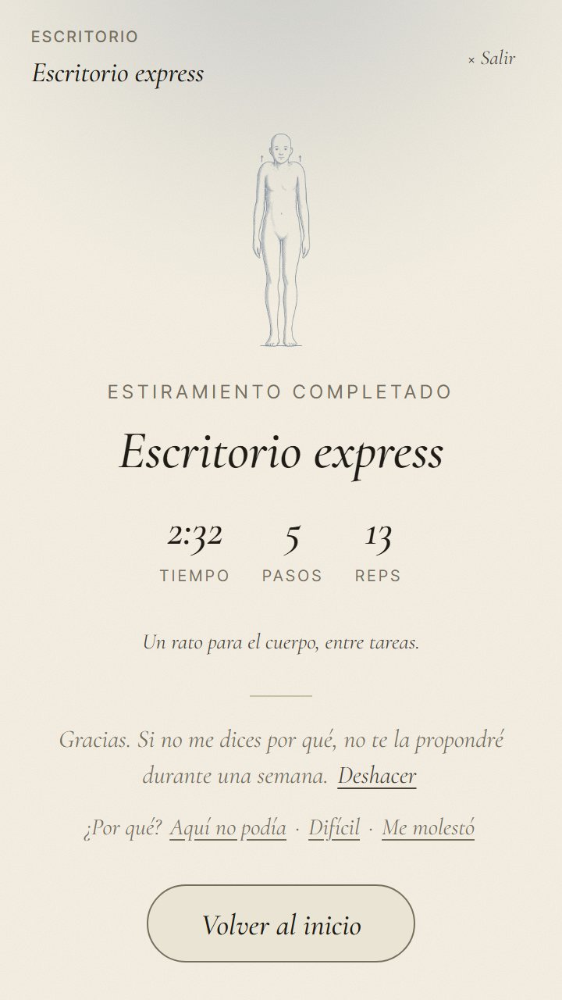<figcaption><b>360 × 640</b></figcaption></figure>
      <figure><figcaption><b>360 × 740</b></figcaption></figure>
      <figure><figcaption><b>360 × 640, letra al 115 %</b></figcaption></figure>
    </div>
    <div class="copy">
      <div>Gracias. Si no me dices por qué, no te la propondré durante una semana. Deshacer<span>Thank you. Unless you tell me why, I won’t suggest it for a week. Undo</span></div>
      <div>¿Por qué? Aquí no podía · Difícil · Me molestó<span>Why? Couldn’t do it here · Too hard · Uncomfortable</span></div>
    </div>
  </div>

  <div class="opcion">
    <div class="cab"><span class="letra">B</span><h3>Solo «Gracias»</h3></div>
    <p>«Gracias. Deshacer» y la línea de los porqués. Lo más corto, pero si sales sin elegir la aparta una semana sin decirlo.</p>
    <div class="fotos">
      <figure>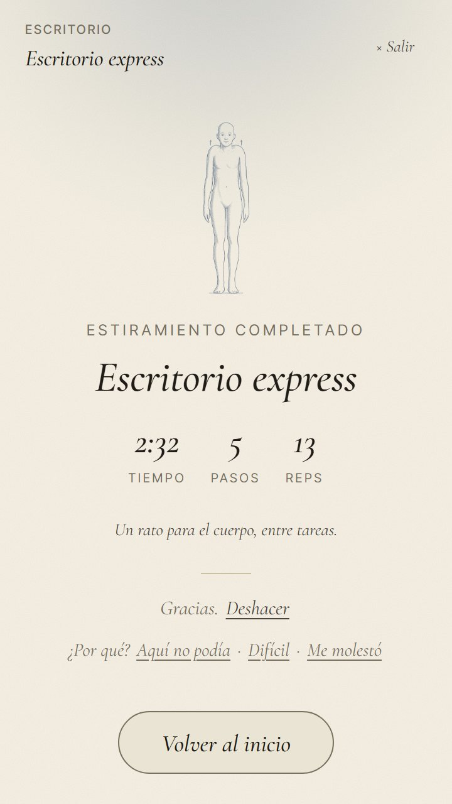<figcaption><b>360 × 640</b></figcaption></figure>
      <figure>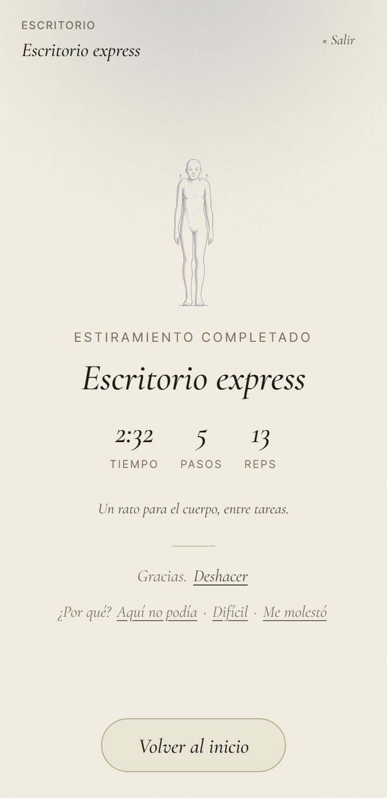<figcaption><b>360 × 740</b></figcaption></figure>
    </div>
    <div class="copy">
      <div>Gracias. Deshacer<span>Thank you. Undo</span></div>
    </div>
  </div>

  <div class="opcion">
    <div class="cab"><span class="letra">C</span><h3>La pregunta arriba y la condición debajo</h3></div>
    <p>«¿Qué pasó?» con la letra de «¿Te ayudó esta pausa?», los porqués en su línea, y debajo, en pequeño, «Si no eliges, no te la propondré durante una semana». Se lee como una pregunta, pero son tres líneas y el dibujo encoge más.</p>
    <div class="fotos">
      <figure>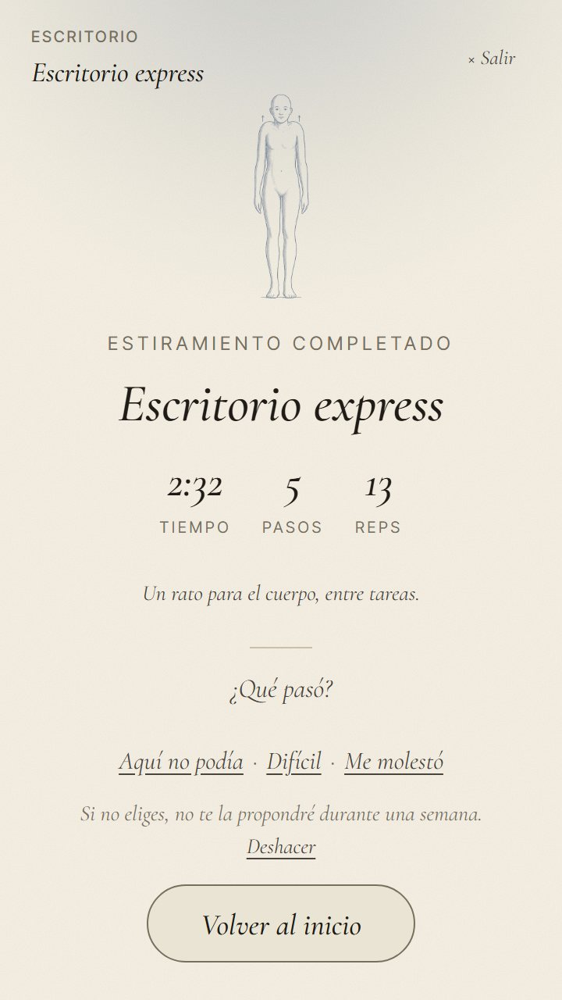<figcaption><b>360 × 640</b></figcaption></figure>
      <figure>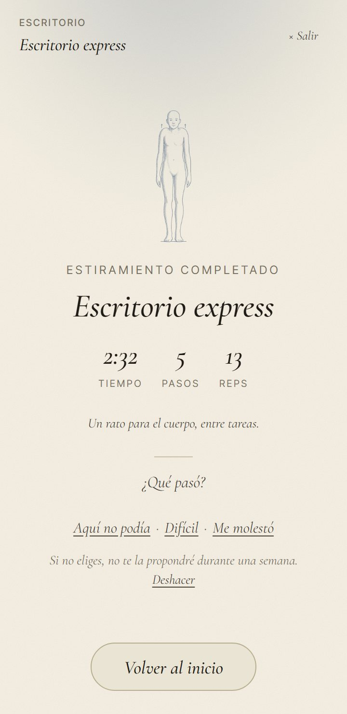<figcaption><b>360 × 740</b></figcaption></figure>
    </div>
    <div class="copy">
      <div>¿Qué pasó?<span>What happened?</span></div>
      <div>Si no eliges, no te la propondré durante una semana. Deshacer<span>If you don’t choose, I won’t suggest it for a week. Undo</span></div>
    </div>
  </div>

  <p><strong>Al tocar un porqué</strong>, igual en las tres: arriba sale lo que hace, la línea se va y «Deshacer» sigue (devuelve «¿Te ayudó esta pausa?»).</p>
  <div class="fotos">
    <figure><figcaption>Tras <b>«Aquí no podía»</b></figcaption></figure>
    <figure>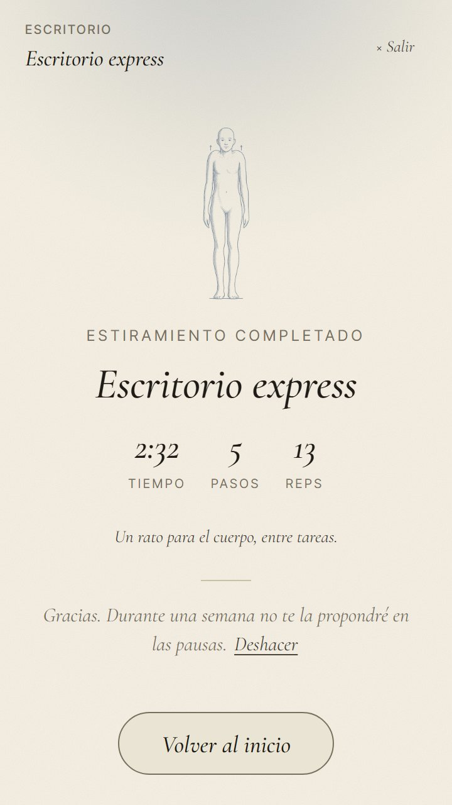<figcaption>Tras <b>«Difícil»</b></figcaption></figure>
    <figure><figcaption>Tras <b>«Me molestó»</b></figcaption></figure>
  </div>
  <div class="copy">
    <div>Gracias. No la aparto: otro día puede encajar.<span>Thank you. I’ll keep suggesting it: it may fit another day.</span></div>
    <div>Gracias. Durante una semana no te la propondré en las pausas.<span>Thank you. I won’t suggest it in your breaks for a week.</span></div>
    <div>Gracias. Durante una semana no te la propondré. Si notas dolor, para y lee Seguridad.<span>Thank you. I won’t suggest it for a week. If you feel pain, stop and read Safety.</span></div>
  </div>
  <p class="medido">Medido en las tres: a 360 × 640 y a 360 × 740 nada pide scroll y ningún botón pisa a otro ni a «Volver al inicio», también con la letra al 115 %.</p>

  <h2>Montado · 1A, 2A, 3A, 4A y 5A</h2>
  <p class="montado-caja"><strong>Montadas las cinco el 15 nov.</strong> en la rama <code>claude/maquetas-uso-15nov-82f8e3</code>, sin juntar: falta tu «júntalo». Las fotos son la app de verdad, sin nada pintado encima.</p>

  <h3>5A · «La de antes» en la ventana de la pausa</h3>
  <p>Como en la maqueta: por libre, debajo de las otras puertas; con «A tu ritmo», debajo de Hidrátate. Entra en la rutina por la misma puerta que la propuesta. No sale si le dijiste «No» esta semana, si es de pago cerrada o lleva aviso de seguridad, ni si es la misma que propone la pausa. Con «A tu ritmo», al acabarla la pausa queda hecha con sus minutos de verdad, como cualquier rutina que acabas con la pausa abierta.</p>
  <div class="fotos">
    <figure>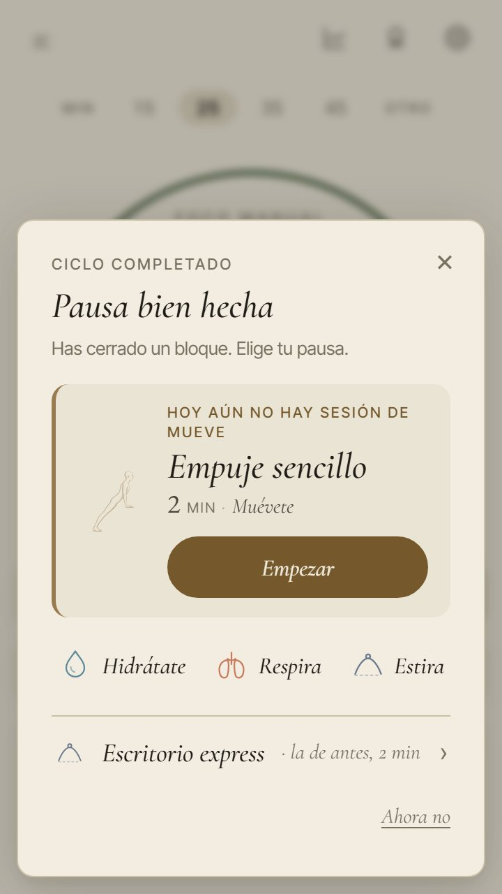<figcaption><b>Por libre</b>, 360 × 640</figcaption></figure>
    <figure>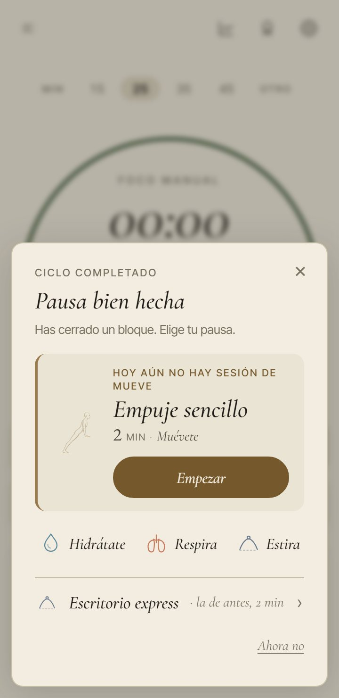<figcaption><b>Por libre</b>, 360 × 740</figcaption></figure>
    <figure>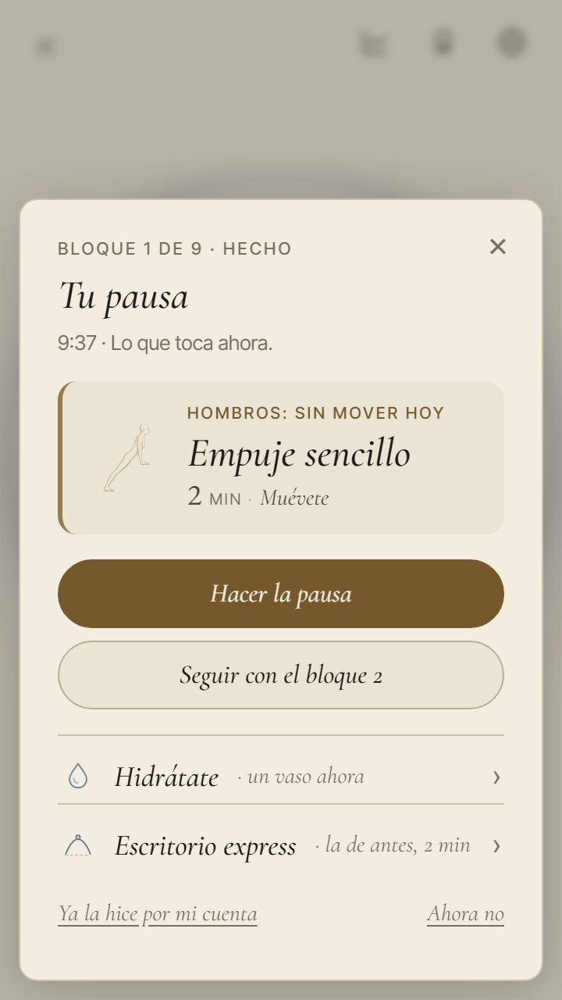<figcaption><b>Con «A tu ritmo»</b>, 360 × 640</figcaption></figure>
  </div>

  <h3>1A y 2A · El aviso a tu hora de entrada</h3>
  <p>La línea «Avísame a mi hora de entrada» en «Tu semana», solo en la app del móvil; en la web no sale. Apagada de fábrica. Al guardar con ella encendida, PACE pide el permiso de avisos si aún no lo tiene. Pone los avisos de los siete días siguientes, desde mañana, cada vez que abres PACE: si un día lo abres antes de tu hora, ese día no avisa, y si dejas de abrirlo, deja de avisar al cabo de una semana. Dice «Hoy, como cada jueves» y «Jornada de 9:00 a 17:00. Tu día ya está preparado.» (o «Media jornada de…»), a tu hora de entrada.</p>
  <div class="fotos">
    <figure>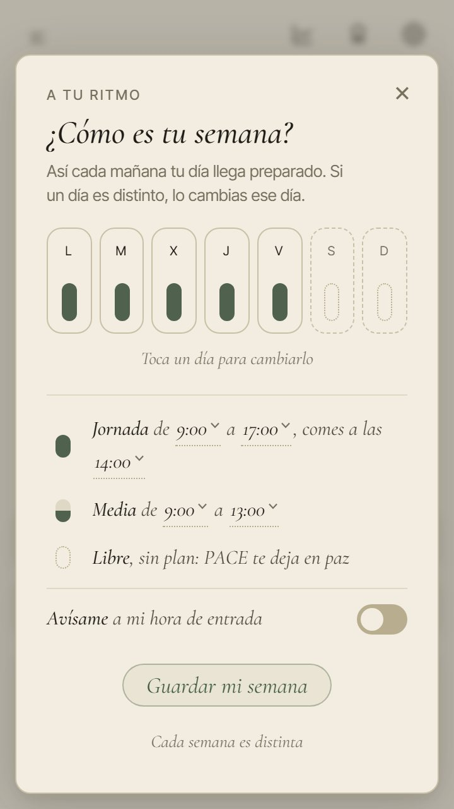<figcaption><b>Apagado de fábrica</b>, 360 × 640</figcaption></figure>
    <figure>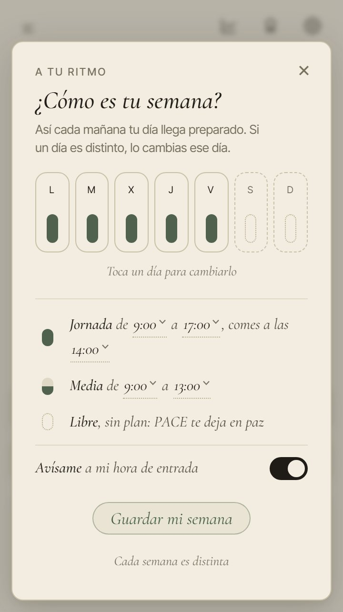<figcaption><b>Encendido</b>, 360 × 640</figcaption></figure>
    <figure><figcaption><b>360 × 740</b></figcaption></figure>
    <figure>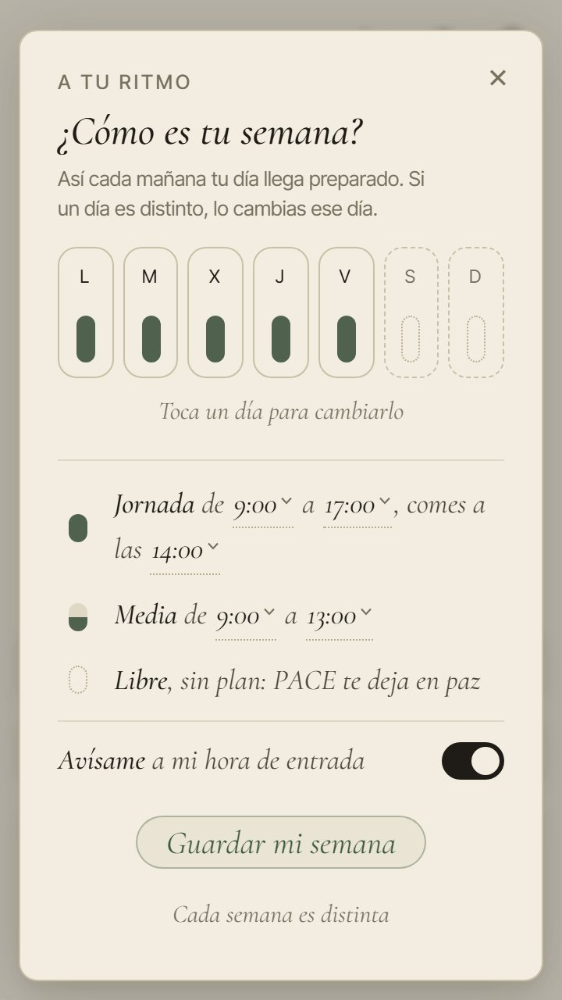<figcaption><b>360 × 640, letra al 115 %</b></figcaption></figure>
  </div>
  <div class="espera">
    <p style="margin:0 0 6px;color:var(--ink)"><b>Sin probar en un móvil de verdad.</b> Aquí se comprueba lo que PACE le pide al sistema, no que el aviso suene. Para probarlo, cuando se junte:</p>
    <ul style="margin:0">
      <li>En Ajustes, Sesiones, «Tu semana ›»: enciende «Avísame a mi hora de entrada» y toca «Guardar mi semana». Acepta el permiso de avisos si lo pide.</li>
      <li>Cierra PACE y no lo abras al día siguiente antes de tu hora. Si es día de jornada, a tu hora de entrada tiene que llegar «Hoy, como cada…» con tu horario. Al tocarlo se abre PACE.</li>
      <li>Otro día, abre PACE antes de tu hora: ese día no tiene que llegar.</li>
      <li>Un día libre (sábado o domingo), nada.</li>
      <li>En el iPhone, lo mismo con la versión de TestFlight.</li>
    </ul>
  </div>

  <h3>4A · El «No» con su porqué</h3>
  <p>Tras el «No», arriba lo que pasa si no dices más, como condición, y debajo «¿Por qué? Aquí no podía · Difícil · Me molestó». «Aquí no podía» no la aparta ni cuenta como «No»; «Difícil» la aparta una semana; «Me molestó» la aparta y enlaza Seguridad; si sales sin elegir, la aparta una semana, como antes. «Deshacer» vuelve a la pregunta desde cualquiera. Si la rutina ya te había ayudado (y por eso no se aparta), arriba dice «Gracias» y los porqués siguen debajo.</p>
  <div class="fotos">
    <figure>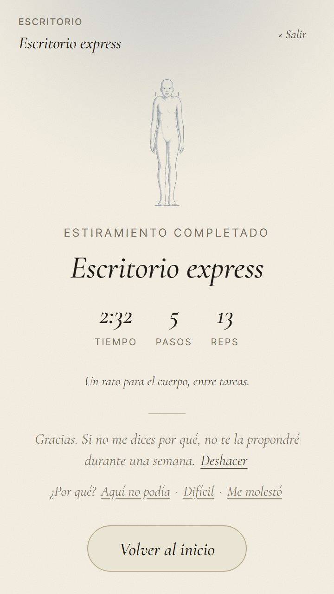<figcaption><b>Tras el «No»</b>, 360 × 640</figcaption></figure>
    <figure>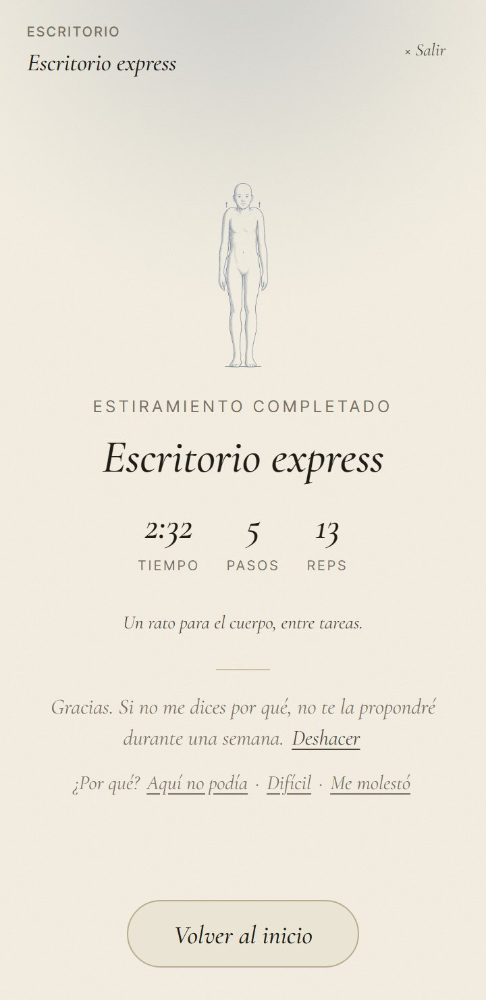<figcaption><b>360 × 740</b></figcaption></figure>
    <figure>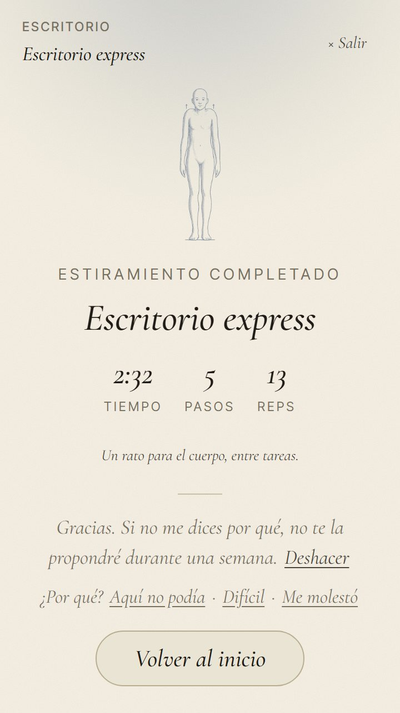<figcaption><b>360 × 640, letra al 115 %</b></figcaption></figure>
    <figure>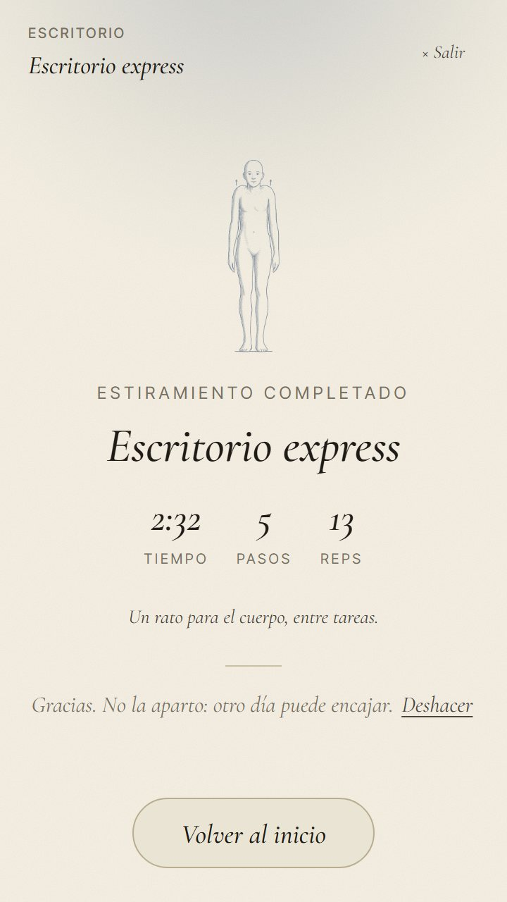<figcaption>Tras <b>«Aquí no podía»</b></figcaption></figure>
    <figure>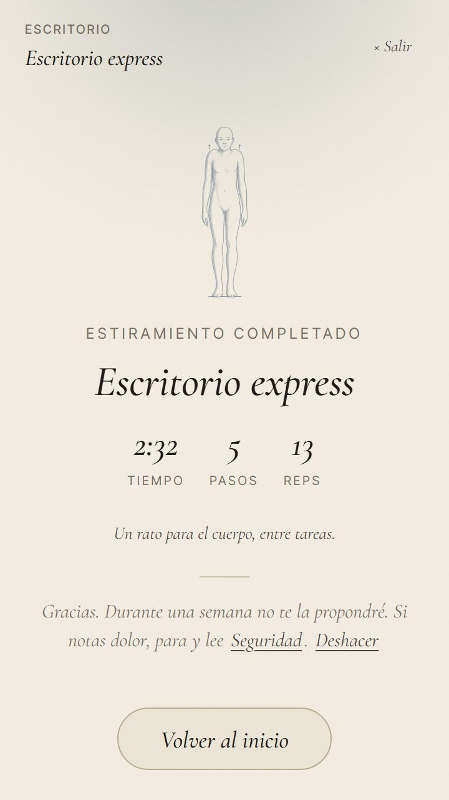<figcaption>Tras <b>«Me molestó»</b></figcaption></figure>
  </div>

  <h3>3A · «¿Te ayudó?» menos veces</h3>
  <p>Las tres primeras veces que acabas cada rutina; después, como mucho una vez a la semana por rutina; y nunca más de dos veces en un día («Ahora no» cuenta como una). Cuando no toca, el cierre sale sin la pregunta, como en la foto: la tercera rutina de un día con dos preguntas ya hechas.</p>
  <div class="fotos">
    <figure>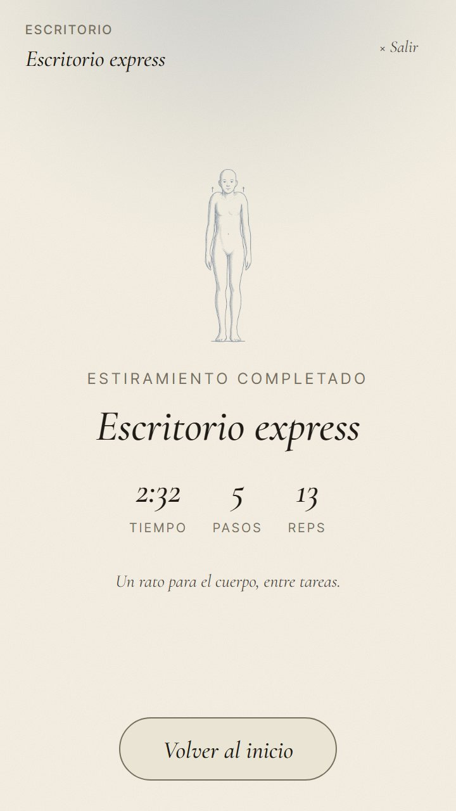<figcaption><b>La tercera del día</b>, 360 × 640</figcaption></figure>
  </div>

  <p class="medido">Comprobado: cuatro pruebas nuevas (<code>pausa-la-de-antes</code>, <code>aviso-entrada</code>, <code>feedback-frecuencia</code> y <code>feedback-porque</code>, 27 casos), nueve fallos puestos a propósito que las ponen en rojo, <code>verify</code>, y las pruebas vecinas en verde con un solo navegador: 77 de la ventana de la pausa, 181 del aviso y de la pregunta (la única que cayó, una de Android que contaba las llamadas al sistema, destapó un fallo del aviso; arreglado, pasa) y 68 del cierre, más las 16 del iPhone en WebKit. A 360 × 640 y 360 × 740 nada pide scroll ni pisa, también con la letra al 115 %.</p>


  <h2>Lo que ya elegiste</h2>
  <p>Lo de abajo es la página tal como la viste, con tus letras marcadas. La 4 de antes queda para comparar.</p>


  <!-- ============================================================ 1 -->
  <h2>1 · Un aviso a tu hora de entrada</h2>
  <p>Hoy PACE solo avisa al acabar un Foco o una pausa: nada te trae de vuelta por la mañana. La idea es un aviso a tu hora de entrada, para quien lo quiera, en Android y en el iPhone. Estas reglas valen para todas las letras:</p>
  <ul>
    <li><strong>Apagado de fábrica.</strong> Lo enciende cada persona.</li>
    <li><strong>Solo los días con jornada o media jornada</strong> en «Tu semana». Los días libres, nada (la semana ya lo dice: «PACE te deja en paz»). Sin semana guardada, no hay aviso.</li>
    <li><strong>Si ese día ya abriste PACE antes de la hora, no sale.</strong> Si cambias el día a libre con «Hoy es distinto», tampoco.</li>
    <li>Sin «te echamos de menos», sin rachas y sin contar días.</li>
    <li>En la web no existe: sin un servidor, la web no puede avisar con PACE cerrado.</li>
  </ul>

  <div class="pregunta">
    <div class="t">Pregunta 1</div>
    <h3>¿Dónde se enciende?</h3>
  </div>

  <div class="opcion rec">
    <div class="cab"><span class="letra">A</span><h3>En «Tu semana», debajo de tus horas</h3><span class="sello ya">Elegida</span></div>
    <p>Una línea más en la hoja «¿Cómo es tu semana?», con su interruptor. Se guarda con «Guardar mi semana». Se llega desde Ajustes, en Sesiones, con «Tu semana ›».</p>
    <p class="porque">Por qué: el aviso sale de tu semana y está junto a las horas que lo deciden. Y Ajustes no crece.</p>
    <div class="fotos">
      <figure><figcaption><b>360 × 640</b></figcaption></figure>
      <figure>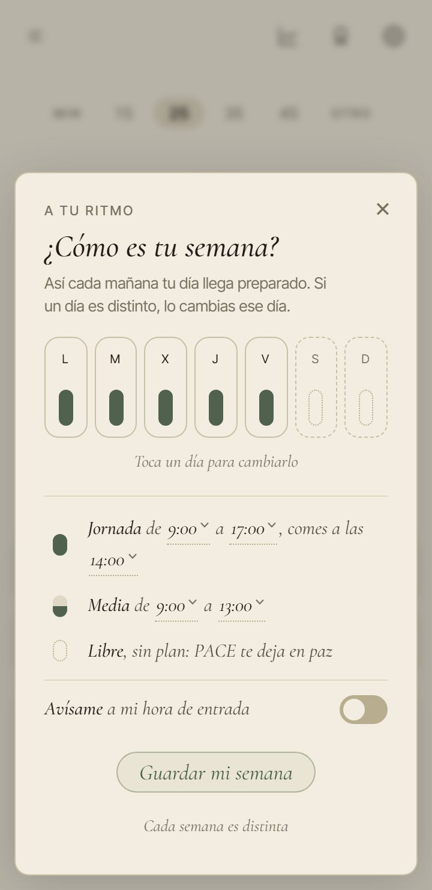<figcaption><b>360 × 740</b></figcaption></figure>
      <figure>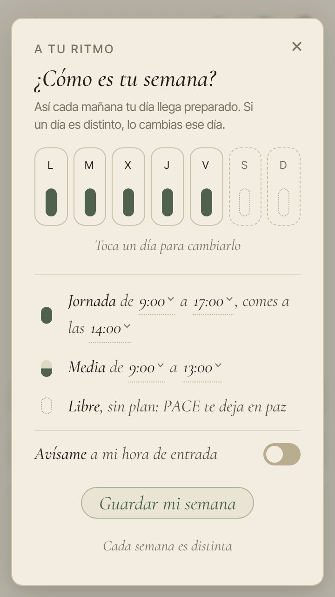<figcaption><b>360 × 640, letra al 115 %</b></figcaption></figure>
    </div>
    <div class="copy">
      <div>Avísame a mi hora de entrada<span>Remind me at my start time</span></div>
    </div>
    <p class="medido">Medido: cabe sin scroll a 360 × 640 y a 360 × 740, también con la letra al 115 %. La ventana sube 49 px y no tapa nada.</p>
  </div>

  <div class="opcion">
    <div class="cab"><span class="letra">B</span><h3>En Ajustes, debajo de «Aviso al terminar»</h3></div>
    <p>Una fila nueva, «Aviso al empezar», junto al otro aviso. Es donde se buscan los avisos.</p>
    <div class="fotos">
      <figure>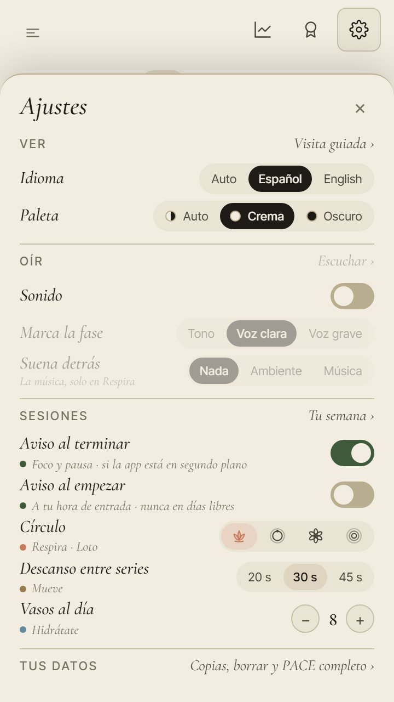<figcaption><b>360 × 640</b></figcaption></figure>
      <figure>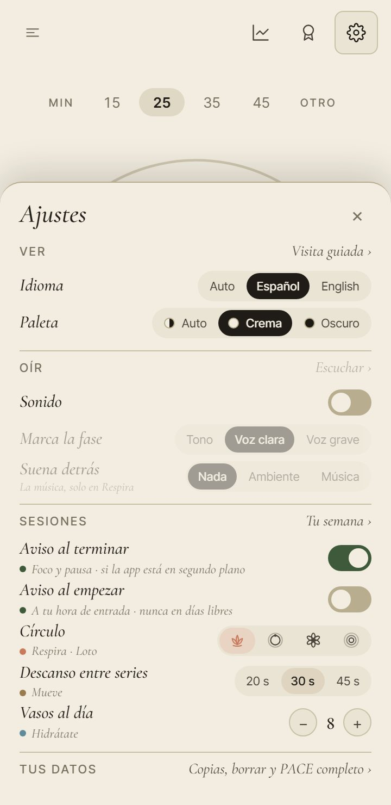<figcaption><b>360 × 740</b></figcaption></figure>
      <figure>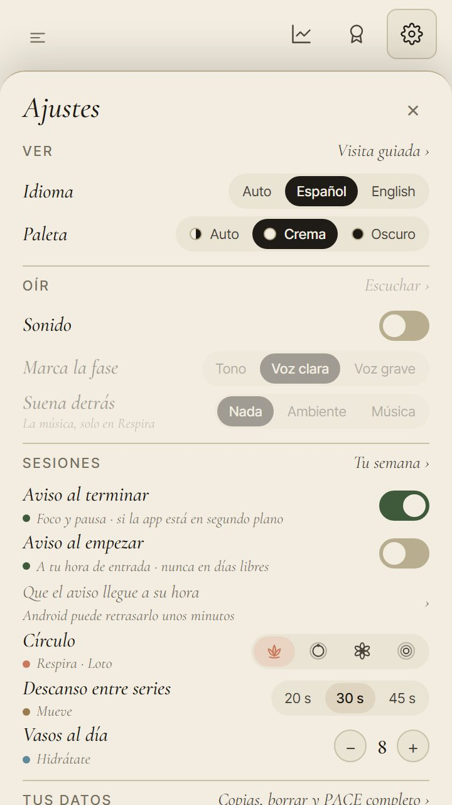<figcaption><b>360 × 640, Android sin «Alarmas y recordatorios»</b>: «Tus datos» queda cortado</figcaption></figure>
    </div>
    <div class="copy">
      <div>Aviso al empezar · A tu hora de entrada · nunca en días libres<span>Start-of-day alert · At your start time · never on days off</span></div>
    </div>
    <p class="medido mal">Medido: en el caso normal cabe. Pero en un Android que enseña «Que el aviso llegue a su hora», Ajustes pide 29 px de scroll a 360 × 640 (tercera foto), y con la letra al 115 % pide 30 px aunque no salga esa fila. Ajustes del móvil no puede tener scroll (tu 2A del 22 oct.): habría que apretar todas las filas.</p>
  </div>

  <div class="pregunta">
    <div class="t">Pregunta 2</div>
    <h3>¿Qué dice el aviso, y a qué hora?</h3>
  </div>

  <div class="opcion rec">
    <div class="cab"><span class="letra">A</span><h3>A tu hora de entrada, con las palabras de la tarjeta de la mañana</h3><span class="sello ya">Elegida</span></div>
    <p>A las 9:00 en punto, si tu jornada empieza a las 9:00. Dice lo mismo que la tarjeta que verás al abrir PACE. Al tocarlo se abre la home con «Hoy, como cada jueves» y «Preparar jornada».</p>
    <p class="porque">Por qué: no pide nada ni promete nada que luego cambie, y no hace falta otro ajuste para la hora.</p>
    <div class="fotos">
      <figure>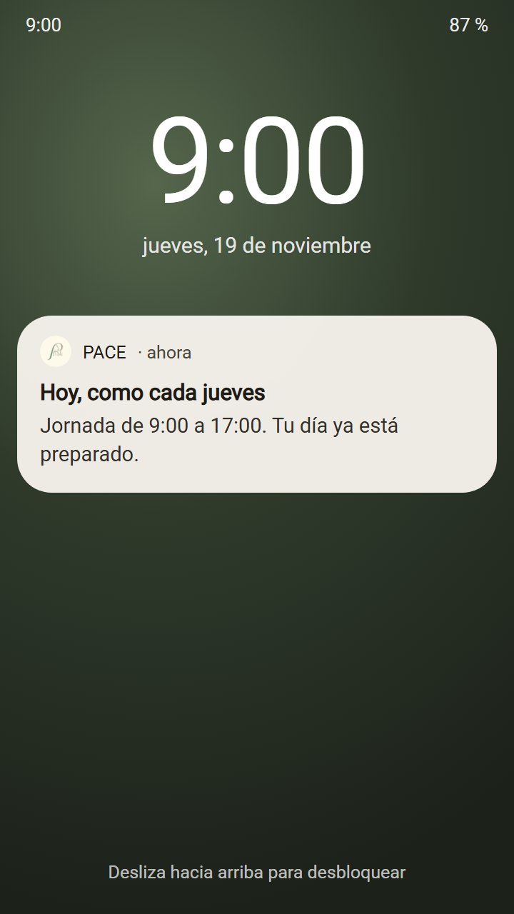<figcaption><b>El aviso</b> (dibujado, con la forma de Android)</figcaption></figure>
      <figure>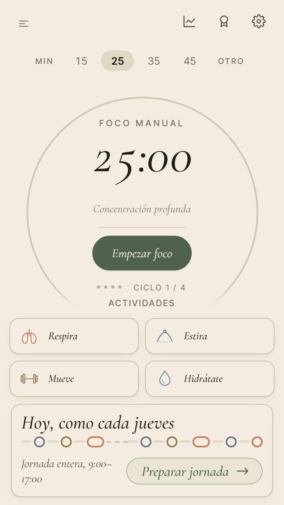<figcaption><b>Al tocarlo</b>, la home de verdad, 360 × 640</figcaption></figure>
      <figure>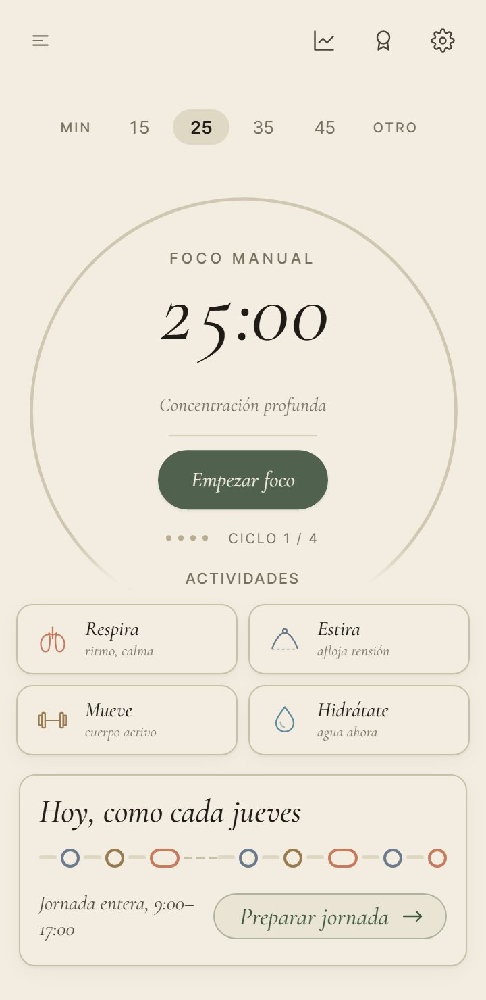<figcaption><b>Al tocarlo</b>, 360 × 740</figcaption></figure>
    </div>
    <div class="copy">
      <div>Hoy, como cada jueves<span>Today, like every Thursday</span></div>
      <div>Jornada de 9:00 a 17:00. Tu día ya está preparado.<span>Full day, 9:00 to 17:00. Your day is ready.</span></div>
      <div>Media jornada de 9:00 a 13:00. Tu día ya está preparado.<span>Half day, 9:00 to 13:00. Your day is ready.</span></div>
    </div>
  </div>

  <div class="opcion">
    <div class="cab"><span class="letra">B</span><h3>Cinco minutos antes, con el primer bloque y la primera pausa</h3></div>
    <p>Más concreto. Pero si empiezas tarde o cambias el día, PACE recoloca las pausas, y el aviso ya habría dicho otra rutina.</p>
    <div class="fotos">
      <figure>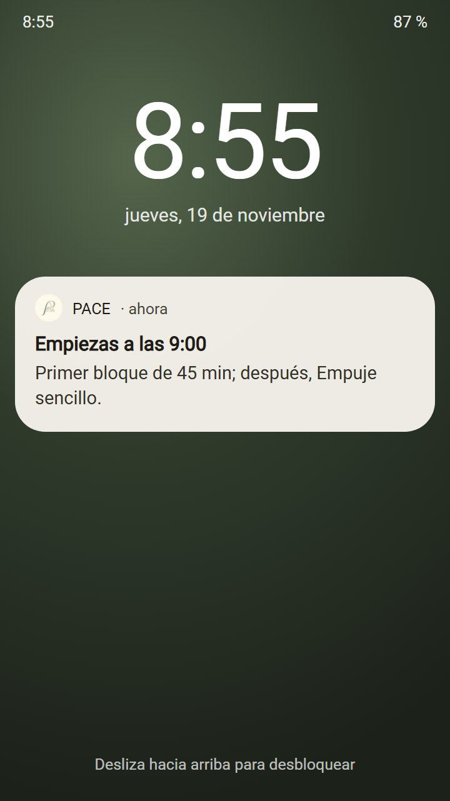<figcaption><b>El aviso</b> (dibujado)</figcaption></figure>
    </div>
    <div class="copy">
      <div>Empiezas a las 9:00<span>You start at 9:00</span></div>
      <div>Primer bloque de 45 min; después, Empuje sencillo.<span>First block, 45 min; then Simple Push.</span></div>
    </div>
    <p class="nota">El bloque de 45 min y «Empuje sencillo» son los que la app sirve de verdad ese jueves con la semana de ejemplo.</p>
  </div>

  <!-- ============================================================ 2 -->
  <h2>2 · «¿Te ayudó?» menos veces, y el «No» con su porqué</h2>
  <p>Hoy la pregunta sale al acabar cada rutina, una vez por rutina y día. Una jornada entera de «A tu ritmo» trae siete pausas con nueve rutinas distintas (contadas en la app, con la semana de ejemplo), así que puede preguntar nueve veces en un día. Y un «No» aparta la rutina de las pausas una semana, también cuando el motivo era que allí no podías hacerla.</p>
  <p>Se quedan como están: el apartado de una semana, «Deshacer» y «Ahora no».</p>
  <div class="fotos hoy">
    <figure>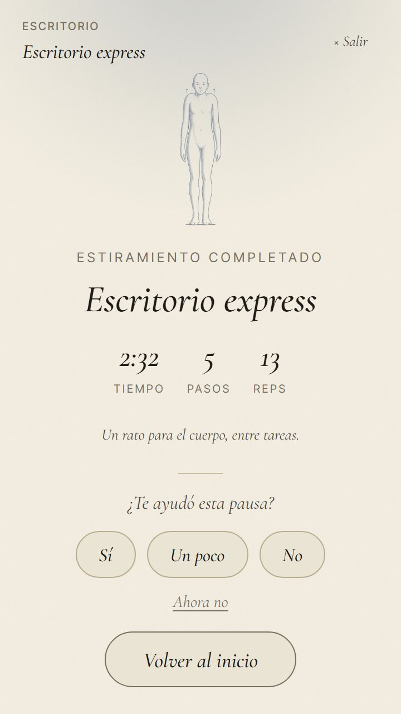<figcaption><b>Hoy</b>, al acabar «Escritorio express»</figcaption></figure>
    <figure>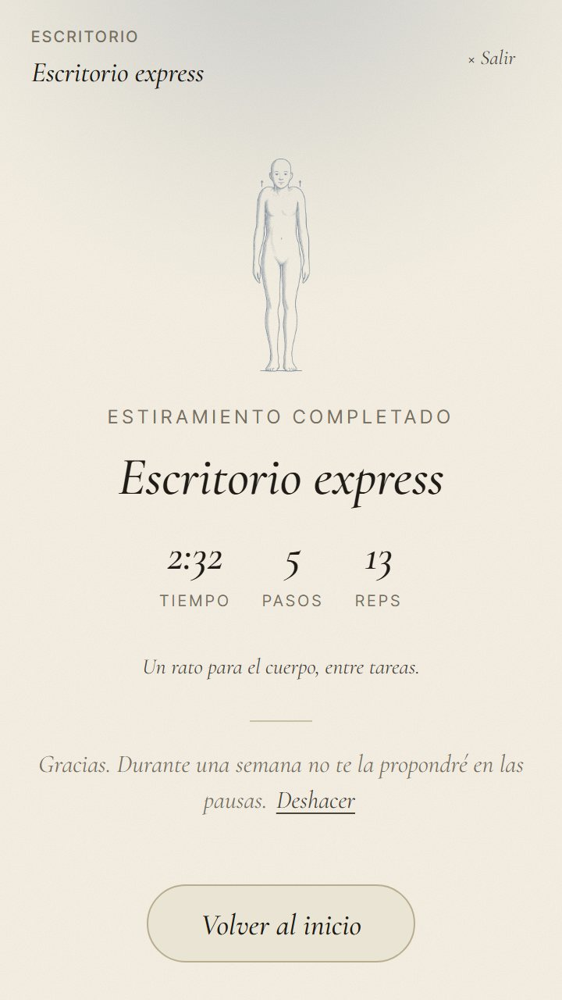<figcaption><b>Hoy</b>, tras el «No»</figcaption></figure>
    <figure><figcaption><b>Cuando no toca preguntar</b>, como sale hoy la segunda vez del día</figcaption></figure>
  </div>

  <div class="pregunta">
    <div class="t">Pregunta 3</div>
    <h3>¿Cada cuánto pregunta?</h3>
    <p>Cuando no toca, el cierre queda como en la tercera foto de arriba, que ya existe hoy.</p>
  </div>

  <div class="opcion rec">
    <div class="cab"><span class="letra">A</span><h3>Tres veces, y luego de vez en cuando</h3><span class="sello ya">Elegida</span></div>
    <p>Las tres primeras veces que acabas cada rutina. Después, como mucho una vez a la semana por rutina. Y nunca más de dos veces en un día: «Ahora no» cuenta como una de las dos.</p>
    <p class="porque">Por qué: tres respuestas son justo las que necesita «Qué te ayuda» para hablar de una rutina, y se pasa de hasta nueve preguntas al día a dos como mucho.</p>
  </div>
  <div class="opcion">
    <div class="cab"><span class="letra">B</span><h3>Una al día</h3></div>
    <p>Solo al acabar la primera rutina del día que aún no tenga tres respuestas. Lo más tranquilo, pero «Qué te ayuda» tarda más en tener algo que decir.</p>
  </div>
  <div class="opcion">
    <div class="cab"><span class="letra">C</span><h3>Solo al principio</h3></div>
    <p>Como hoy hasta tener tres respuestas de cada rutina; luego no vuelve a preguntar por esa. Muchas preguntas las primeras semanas y casi ninguna después.</p>
  </div>
  <div class="tabla">
    <table class="cuenta">
      <thead><tr><th>En una semana de cinco jornadas enteras</th><th>Preguntas</th></tr></thead>
      <tbody>
        <tr><td>Hoy</td><td>hasta 45 (nueve al día)</td></tr>
        <tr><td>A</td><td>hasta 10 (dos al día), y menos según pasan las semanas</td></tr>
        <tr><td>B</td><td>5 (una al día)</td></tr>
        <tr><td>C</td><td>como hoy al principio; luego, casi ninguna</td></tr>
      </tbody>
    </table>
  </div>

  <div class="pregunta">
    <div class="t">Pregunta 4 (antes de la vuelta)</div>
    <h3>¿Cómo se dice el porqué del «No»?</h3>
    <p>Elegiste la forma de la B con lo que hace la A: la vuelta está arriba del todo.</p>
  </div>
  <div class="antes">

  <div class="opcion rec">
    <div class="cab"><span class="letra">A</span><h3>Tras el «No», «¿Qué pasó?» en el mismo sitio</h3><span class="sello">Antes de la vuelta</span></div>
    <p>Tres respuestas donde estaban «Sí · Un poco · No», y «Deshacer» debajo, donde estaba «Ahora no». Cada una hace lo que dice:</p>
    <ul>
      <li><strong>«Aquí no podía»</strong>: no la aparta, y no cuenta como «No».</li>
      <li><strong>«Difícil»</strong>: la aparta una semana, como hoy.</li>
      <li><strong>«Me molestó»</strong>: la aparta una semana y enlaza la página de Seguridad.</li>
      <li>Si sales sin elegir, como hoy: la aparta una semana.</li>
    </ul>
    <p class="porque">Por qué: una cosa cada vez y en el mismo sitio, y un «aquí no podía» ya no te quita una rutina que sí te sirve.</p>
    <div class="fotos">
      <figure>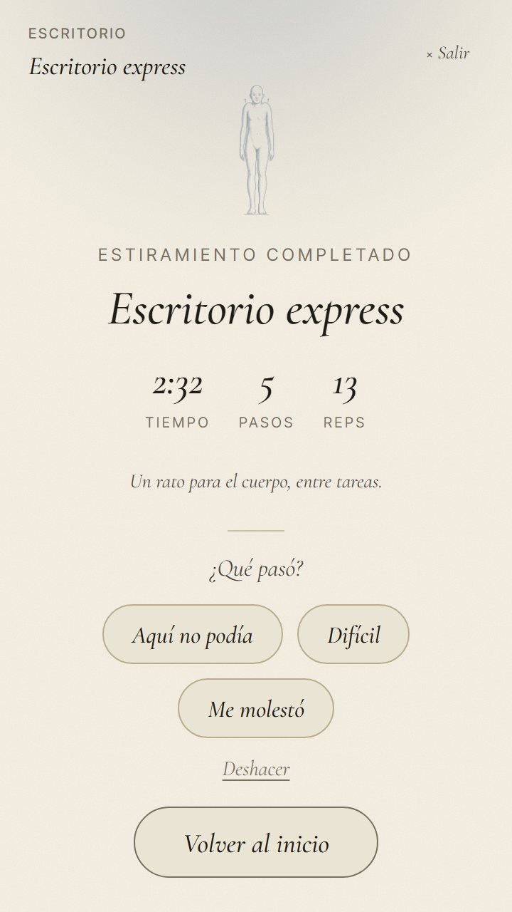<figcaption><b>360 × 640</b>: el dibujo encoge para que quepa, como ya hace</figcaption></figure>
      <figure>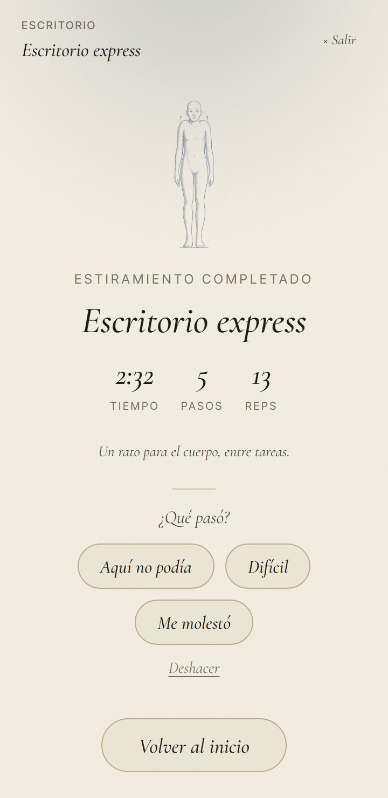<figcaption><b>360 × 740</b></figcaption></figure>
      <figure>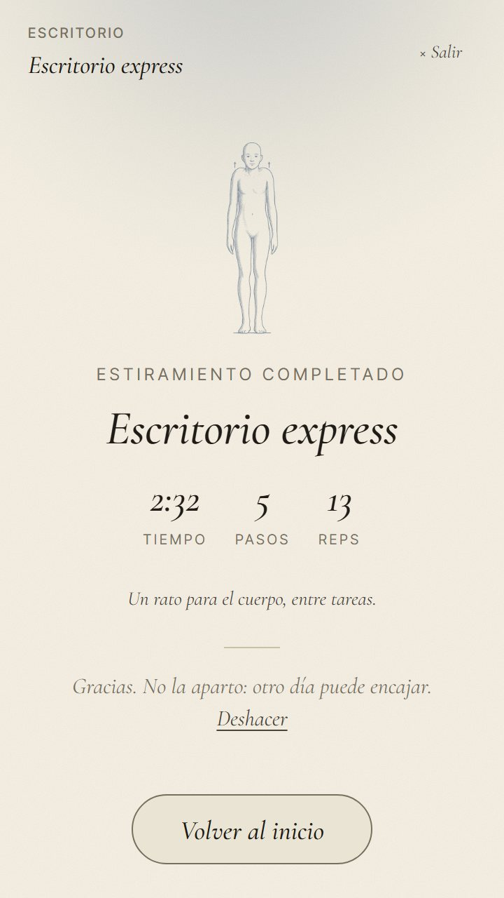<figcaption>Tras <b>«Aquí no podía»</b></figcaption></figure>
      <figure>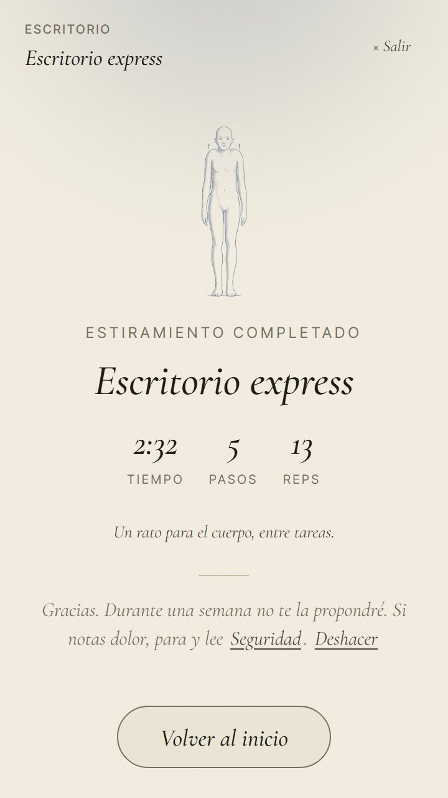<figcaption>Tras <b>«Me molestó»</b></figcaption></figure>
    </div>
    <div class="copy">
      <div>¿Qué pasó?<span>What happened?</span></div>
      <div>Aquí no podía · Difícil · Me molestó · Deshacer<span>Couldn’t do it here · Too hard · Uncomfortable · Undo</span></div>
      <div>Gracias. No la aparto: otro día puede encajar.<span>Thank you. I’ll keep suggesting it: it may fit another day.</span></div>
      <div>Gracias. Durante una semana no te la propondré en las pausas.<span>Thank you. I won’t suggest it in your breaks for a week.</span> <span>(el de hoy, para «Difícil»)</span></div>
      <div>Gracias. Durante una semana no te la propondré. Si notas dolor, para y lee Seguridad.<span>Thank you. I won’t suggest it for a week. If you feel pain, stop and read Safety.</span></div>
    </div>
    <p class="medido">Medido: a 360 × 640 y a 360 × 740 ningún botón pisa a otro ni a «Volver al inicio», y nada pide scroll, también con la letra al 115 %.</p>
  </div>

  <div class="opcion">
    <div class="cab"><span class="letra">B</span><h3>El aviso de hoy, y debajo sus porqués en una línea</h3></div>
    <p>Sin un paso más: tocar uno cambia el texto como en la A. Pero primero dice «no te la propondré», aunque luego resulte que allí no podías.</p>
    <div class="fotos">
      <figure>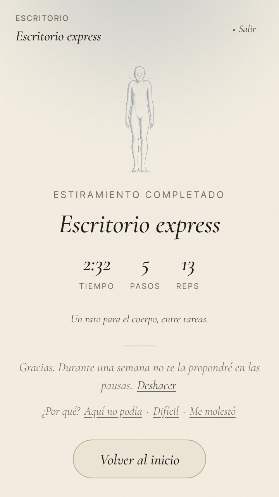<figcaption><b>360 × 640</b></figcaption></figure>
      <figure>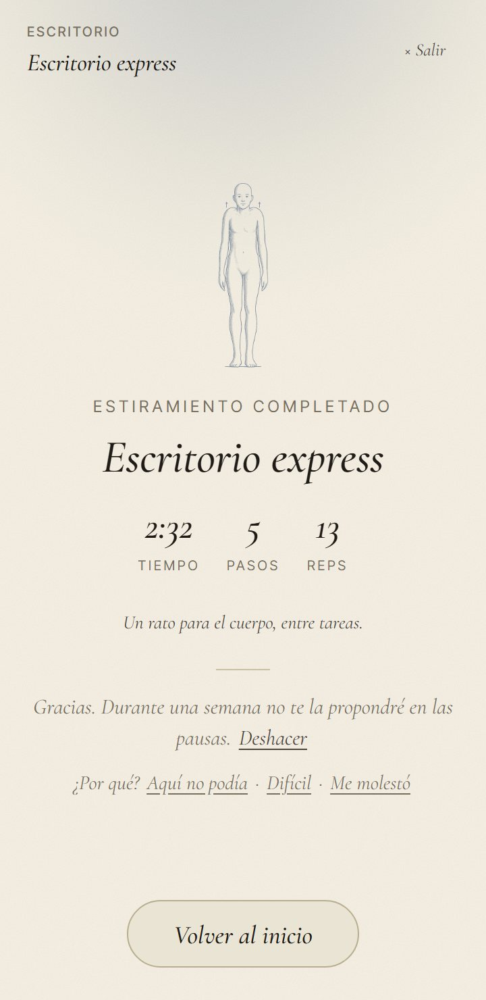<figcaption><b>360 × 740</b></figcaption></figure>
    </div>
    <div class="copy">
      <div>¿Por qué? Aquí no podía · Difícil · Me molestó<span>Why? Couldn’t do it here · Too hard · Uncomfortable</span></div>
    </div>
  </div>

  <div class="opcion">
    <div class="cab"><span class="letra">C</span><h3>«Aquí no podía» desde el principio, junto a «Ahora no»</h3></div>
    <p>No aparta la rutina ni cuenta como «No»; el «No» sigue como hoy. Lo más simple, pero no separa «difícil» de «me molestó», y quien se hizo daño no ve Seguridad.</p>
    <div class="fotos">
      <figure>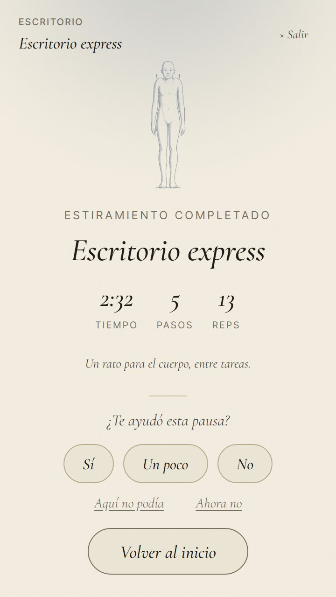<figcaption><b>360 × 640</b></figcaption></figure>
    </div>
    <div class="copy">
      <div>Aquí no podía · Ahora no<span>Couldn’t do it here · Not now</span></div>
    </div>
  </div>

  </div>

  <!-- ============================================================ 3 -->
  <h2>3 · «La de antes» en la ventana de la pausa</h2>
  <p>Es la V2 de la revisión 8 de ChatGPT: «ponme aquella que ya sé hacer». La ventana de la pausa propone una rutina distinta cada vez, a propósito. Esto añade la última que hiciste, para quien prefiere lo conocido. Reglas para todas las letras:</p>
  <ul>
    <li>Solo si la de antes es de Respira, Mueve o Estira y la acabaste.</li>
    <li><strong>Nunca si le dijiste «No» esta semana</strong>: está apartada, y aquí también.</li>
    <li><strong>Nunca si es de pago y no tienes PACE completo</strong> (hasta v1 está todo abierto).</li>
    <li>Si es la misma que propone la pausa, no sale: no se dice dos veces lo mismo.</li>
    <li>Con «A tu ritmo», hacerla cuenta como la pausa hecha, como «Ya la hice por mi cuenta».</li>
  </ul>
  <p>En el cajón del móvil, yendo por libre, ya existe «Repetir · Lo último que hiciste». Con «A tu ritmo» ese sitio anuncia la siguiente pausa, así que no sirve para esto.</p>
  <div class="fotos hoy">
    <figure>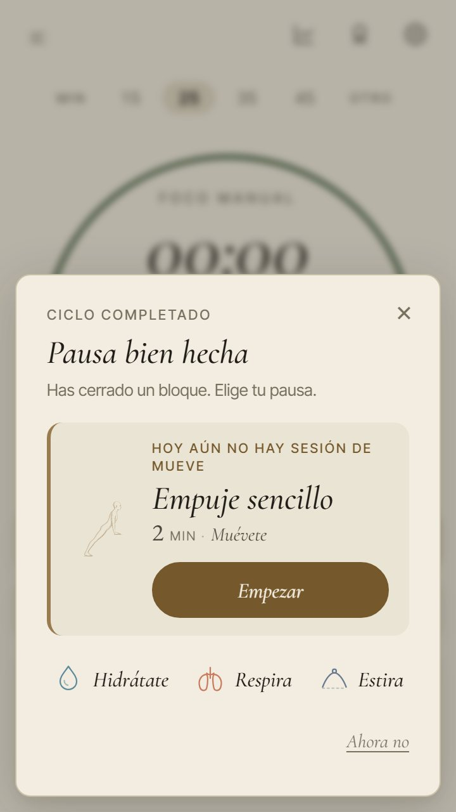<figcaption><b>Hoy</b>, por libre</figcaption></figure>
    <figure>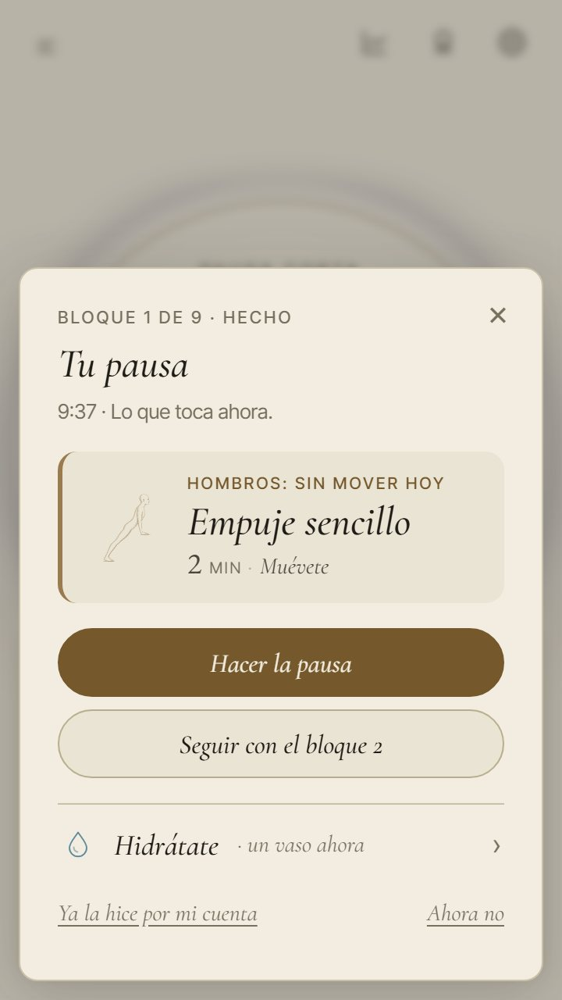<figcaption><b>Hoy</b>, con «A tu ritmo»</figcaption></figure>
  </div>

  <div class="pregunta">
    <div class="t">Pregunta 5</div>
    <h3>¿Dónde vive «la de antes»?</h3>
    <p>En las fotos, la de antes es «Escritorio express», hecha esa mañana y contestada con «Sí».</p>
  </div>

  <div class="opcion rec">
    <div class="cab"><span class="letra">A</span><h3>Una fila más en la ventana de la pausa</h3><span class="sello ya">Elegida</span></div>
    <p>Con el dibujo de su módulo, su nombre y «la de antes». Por libre, debajo de las otras tres puertas; con «A tu ritmo», debajo de «Hidrátate» y con su mismo estilo.</p>
    <p class="porque">Por qué: es la única que sirve igual en las dos ventanas, dice qué rutina es y no compite con la propuesta.</p>
    <div class="fotos">
      <figure><figcaption><b>Por libre</b>, 360 × 640</figcaption></figure>
      <figure><figcaption><b>Por libre</b>, 360 × 740</figcaption></figure>
      <figure><figcaption><b>Con «A tu ritmo»</b>, 360 × 640</figcaption></figure>
      <figure>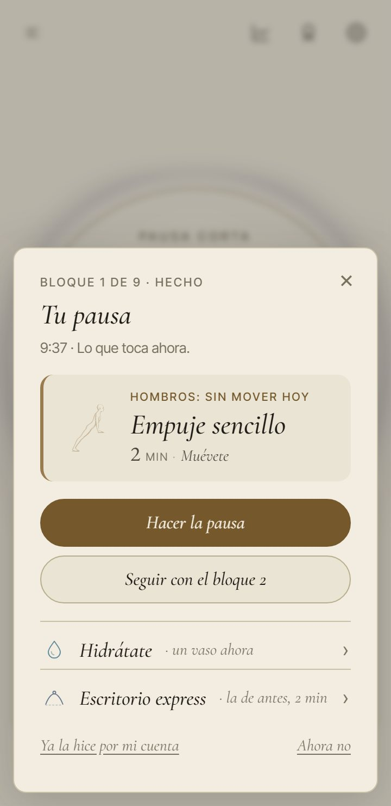<figcaption><b>Con «A tu ritmo»</b>, 360 × 740</figcaption></figure>
    </div>
    <div class="copy">
      <div>Escritorio express · la de antes, 2 min ›<span>Desk Express · your last one, 2 min ›</span></div>
    </div>
    <p class="medido">Medido: cabe sin scroll a 360 × 640 y a 360 × 740, también con la letra al 115 %. La ventana sube 59 px por libre y 44 px con «A tu ritmo», y no tapa nada.</p>
  </div>

  <div class="opcion">
    <div class="cab"><span class="letra">B</span><h3>Un enlace en el pie, a la izquierda de «Ahora no»</h3></div>
    <p>No añade alto. Pero con «A tu ritmo» ese sitio ya lo ocupa «Ya la hice por mi cuenta»: solo serviría yendo por libre.</p>
    <div class="fotos">
      <figure>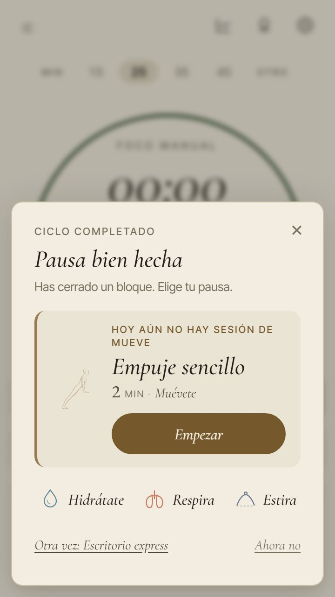<figcaption><b>Por libre</b>, 360 × 640</figcaption></figure>
    </div>
    <div class="copy">
      <div>Otra vez: Escritorio express<span>Again: Desk Express</span></div>
    </div>
  </div>

  <div class="opcion">
    <div class="cab"><span class="letra">C</span><h3>Una segunda píldora dentro de la propuesta</h3></div>
    <p>Se ve mucho, pero son dos propuestas en la misma tarjeta (la pausa propone una sola cosa) y un nombre largo no cabe a 360 px: en la foto toca los bordes.</p>
    <div class="fotos">
      <figure>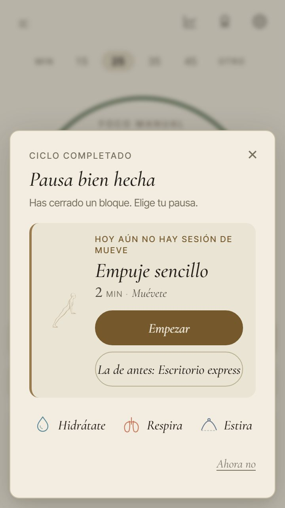<figcaption><b>Por libre</b>, 360 × 640</figcaption></figure>
    </div>
    <div class="copy">
      <div>La de antes: Escritorio express<span>Your last one: Desk Express</span></div>
    </div>
  </div>

  <!-- ============================================================ tabla -->
  <h2>Tus letras</h2>
  <p>Elegidas el 15 nov. y montadas en la rama.</p>
  <div class="tabla">
    <table class="final">
      <thead><tr><th>Pregunta</th><th>Letra</th><th>En una línea</th></tr></thead>
      <tbody>
        <tr class="grupo"><td colspan="3">Un aviso a tu hora de entrada</td></tr>
        <tr><td>1 · ¿Dónde se enciende?</td><td class="l">A</td><td>En «Tu semana», junto a tus horas. Ajustes no crece.</td></tr>
        <tr><td>2 · ¿Qué dice, y a qué hora?</td><td class="l">A</td><td>«Hoy, como cada jueves», a tu hora de entrada: lo mismo que verás al abrir.</td></tr>
        <tr class="grupo"><td colspan="3">«¿Te ayudó?»</td></tr>
        <tr><td>3 · ¿Cada cuánto pregunta?</td><td class="l">A</td><td>Tres veces por rutina y luego de vez en cuando; dos al día como mucho.</td></tr>
        <tr><td>4 · ¿Cómo se dice el porqué del «No»?</td><td class="l">A</td><td>La de la segunda vuelta: la forma de la B con lo que hace la A; arriba, lo que pasa si no eliges, dicho como condición.</td></tr>
        <tr class="grupo"><td colspan="3">La de antes</td></tr>
        <tr><td>5 · ¿Dónde vive?</td><td class="l">A</td><td>Una fila en la ventana de la pausa, igual con y sin «A tu ritmo».</td></tr>
      </tbody>
    </table>
  </div>
  <p class="orden"><strong>El orden para montarlas</strong>, si no dices otro: primero «¿Te ayudó?» (solo toca la app y se prueba entera aquí), luego «la de antes», y el aviso al final, porque hay que probarlo en un Android y un iPhone de verdad.</p>
  <p class="nota">Lo que no se ha podido pintar: el aviso del sistema, que va dibujado con la forma de Android (en el iPhone sale con la suya, con las mismas palabras), y cómo llega en un móvil de verdad. Las medidas con la letra al 115 % agrandan cada letra de la pantalla, como hace la prueba de la home. Las fotos y medidas salen de <code>genera.js</code>, en esta carpeta.</p>
</main>
